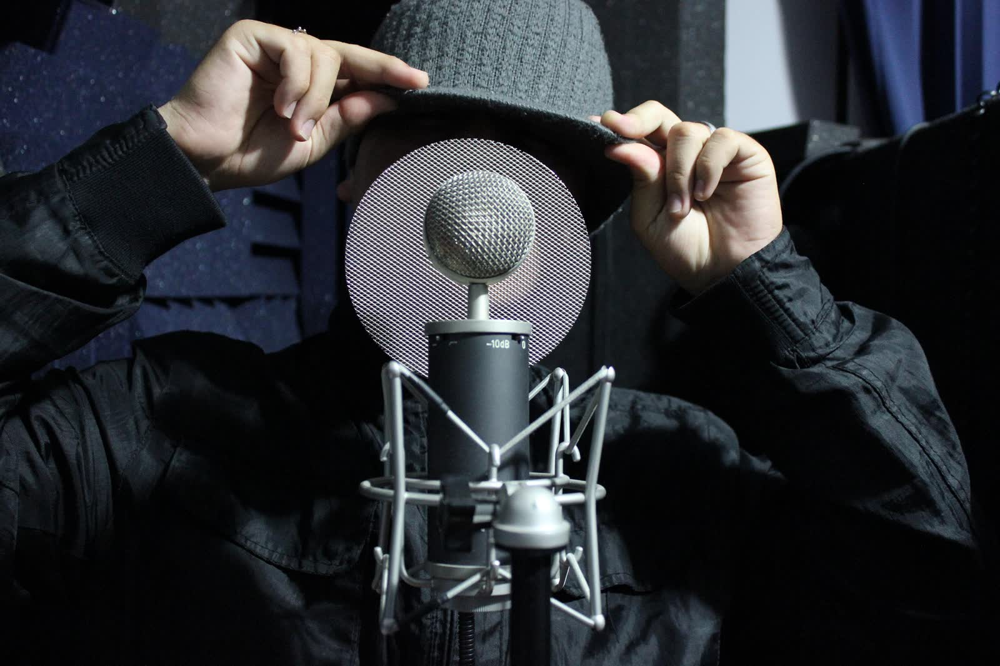

Mixage trap à distance : la même pression, où que vous soyez
808 qui tapent, hi-hats qui claquent, ad-libs qui remplissent l'espace sans noyer le lead — le mixage trap vit dans le détail. À distance, chez Urbe Studio, cette précision ne change pas d'un octet.

Ce qui fait un mix trap qui tape
La trap repose sur un équilibre exigeant entre le sub, les hi-hats roulés et une voix souvent doublée, triplée, chargée d'ad-libs. Trop de basse et le morceau devient flou au casque ; pas assez et il ne tape plus en club. Un ingénieur habitué au genre sait doser cet équilibre sans y passer trois relectures.
Comment ça marche à distance
- Vous envoyez vos multipistes, où que vous soyez cet été.
- 808 et sub calés pour un rendu qui tape aussi bien en club qu'au casque, sans bouillie.
- Hi-hats et percus nets, sans agressivité dans les aigus.
- Ad-libs et doublages placés pour donner du relief sans masquer le lead.
- Livraison sous 7 jours, urgence 48h disponible.
Ne pas laisser un son trap dormir tout l'été
La trap se consomme vite, en playlists et en shorts — un titre qui traîne trois mois avant d'être mixé perd son momentum. Mixer pendant l'été permet d'arriver à la rentrée avec plusieurs titres prêts à sortir en rafale, plutôt qu'un seul en retard.
Même exigence que pour le rap et l'afro
Retrouvez notre approche du mixage rap et du mixage afro à distance — même précision sur la voix, même travail sur le low-end selon les codes du genre.
Envoie ton son, garde la pression
Mix à partir de 120€ · Urgence 48h disponible · 100% à distance.
Commander mon mix trap →